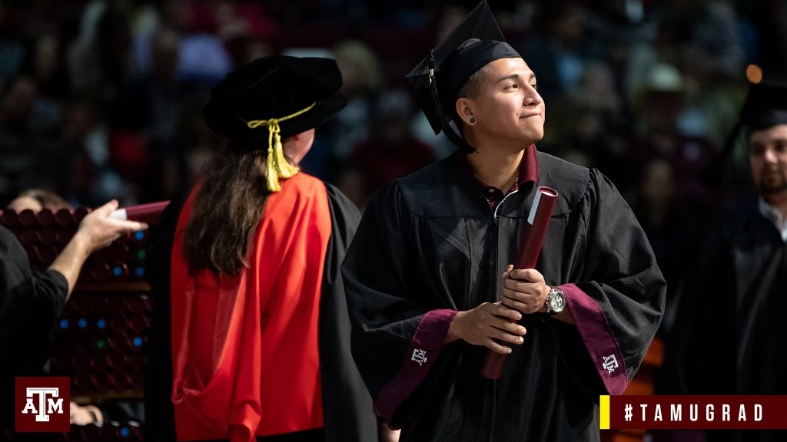
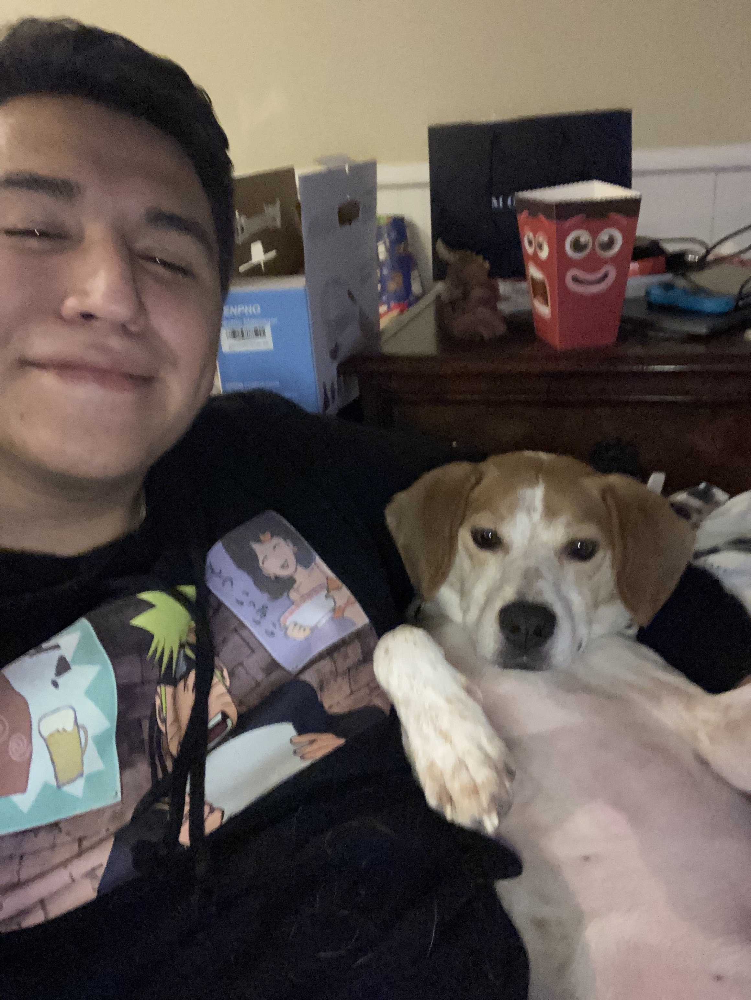
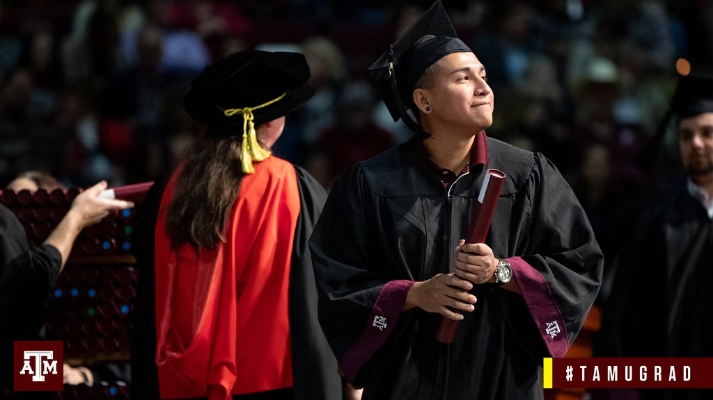
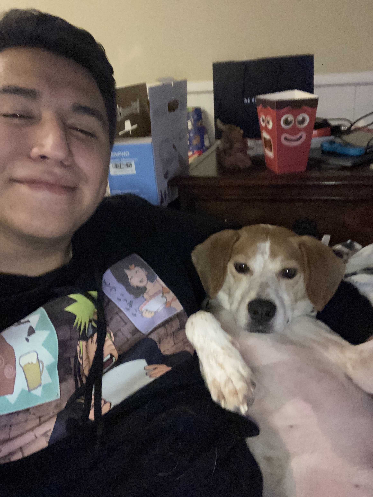

I was born in San Antonio,TX on February 17th, 1996. I graduated from Texas A&M University in December of 2018. I graduated from Texas A&M with a degree in Leadership Education and Development. Upon graduation I threw a dart on the map, and moved up to Kansas City with my now fiance. For the past few years I have worked in education and mental health. I am seeking a new challenge, and I've enrolled in the SavvyCoders Full Stack Web Development program! Through this course I will learn the necessary skills to become a Junior Web Developer!